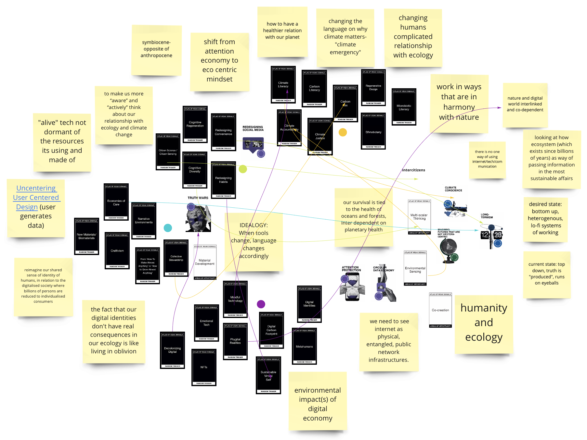
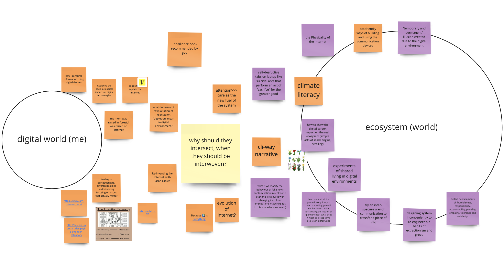

Atlas of Weak Signals
This course was an extension of the previous module in a way- we had to give our respective 'fight' that we chose before and give it more meaning- explore the widths and depths of the topic itself. It was super exciting as we had to find connections between diverse cards like say rural futures, right to repair or food apartheids. We created our design spaces on Miro Board which was nice in a way as I could see everyone’s interests and co-relate to mine. Also the platform seemed very promising for further collaboration and thesis.
I created an are.na board - "cli-fi communication" to start building more layers to my topic. I wish to explore the socio-technical aspects of our digital lives in the shared ecosystem we are all living in. So the approach I’m taking is looking at the meta-human aspect critically (short-term goals, attention economy, polar realities, addiction to information, loss of shared reality, passive consumption, extraction of rare metals for production, excessive energy consumption, non permeable interfaces).
Cards I resonate with
I picked the words that align with my fight and idealogy and also tried to reason them out to be more intentional with the process.
Also the cards are segregated into different sections and color coded. Below each section I've added more cards that run one the same beliefs.
- Redesigning habits: to make us more “aware” and “actively” think about our relationship with ecology and climate change. What does 'better' relationship mean? Does it mean to work in ways that are more non-human centred like universally healthy like reducing carbon impact, more diversity, renewable energy, conversation, ingenious plants ethnobotany, balancing, recycling, less of consumerism. Other cards that follow the same thought [carbon literacy, carbon sequestration, climate justice, climate literacy, right to repair, restoration ecology, digital carbon footprint, digital addictions , NFTs]?
- Redesigning convenience: The present way is very convenient and monoploized for exploitation of resources. It is designed to serve the attention economy. A shift from attention to eco centric
idealogy where long termism is key.
- Climate accountability
- Craftivism: A way to rebel
- Citizen sensing: A sense of responsibility and accountability [collectuve stewardship]
- Economies of care: care for non-human species and essentially for us and our future generations
- Emotional tech
- Cognitive diversity
- Physical realities
- Meta humans
- Digital identities
- Narrative environments
- Mindful Technology
- Decolonising digital
Weak signals:
- carbon natural lisytyles
- Long termism
- Climate conscience
- Human machine creative collaborations
- Redeisgning social media and truth wars
- Circular data economy
- Attention protection
Areas of opportunity:
- Co creation (non-human and human)
- Multi scalar thinking (essential to link it to long term ways of living)
- Environmental sensing and changing
Cards I added:
- Intercitizens (citzens of the internet, borrowed from Manifesto of the Internet Age)
- Symbiocene: opposite of anthropocene

Someone I would like to work with: IAM, Barcelona

Notes from their website which resonated with my beliefs:
-
(re)designing systems to better understand the complexity of the interrelationships and interdependence between digital economy and environmental emergency
- concept of “intercitizenships”
- sustainable futures for the internet(s)
- the awareness of the relationship between personal experience and wider society
beyond the very “human centred design” selfish greed. A product of individualism, extractivism lifestyles and unimaginable wealth concentration
- to contribute to a transition from the individualism of a user-centric digital economy to the interdependence of digital ecosystems driven the the internet citizens. Learn how to become “inter citizens’
- to reimagine our shared sense of identity of humans, in relation to the digitalised society we are all building where billions of persons are reduces to individualised consumers
- focusing on ‘inter’- reciprocal interrelation
- activate a border sense of belonging to planet earth enabled by the internet that includes non-human beings in practice values as humbleness, responsibility, accountability, plurality, empathy, tolerance and solidarity.
- we need to see the internet as physical, entangled, public network infrastructures. Understanding material dimensions and scale of digital economy is a critical factor
- minerals required to make iPhones, energy consumption
- invisible and complex ways that the digital economy is interconnected to massive socio-ecological crisis (NFT)
- ecological framework (inside a digital economy)
- collective imaginations
- changing humans complicated relationship with ecology
- what if we collectively decide to spend our time, attention, money and use data in a different way?
Experiments I want to do:
- changing the language on the present screen medium for the purpose of climate literacy
- show the "real" digital carbon impact on the real ecosystem in terms of resource exploitation and emission or damage done(simple acts of search engine, scrolling)
- experiment related to collective use of electricity (if the limit is exceeded how does it affect the collective system, like if my plant dies?)
- designing systems inconveniently to re-engineer old habits of extractionism and greed
- looking at how a flower communicates to the roots (which exists since billions of years) as a way of passing information in the most sustainable affairs
Skill I want to develop:
- P5.js and arduino for re-designing interface interactions for the existing screens
- Material development for exploring bottom-up and ways of “growing” unconventional communication ( peugeot patina effect that shows the signs of use and builds up emotional connection- 'emotional tech')
back home